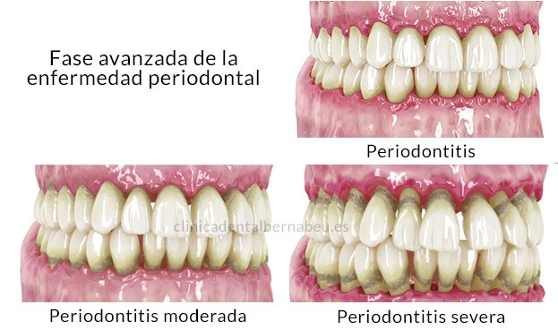

PERIODONTITIS

Periodontitis
La periodontitis es una enfermedad periodontal en una fase severa y aparece cuando no se ha tratado a tiempo la gingivitis.
Es más complicada de tratar que la gingivitis. En este caso, las bacterias se extienden por la línea gingival y llegan al hueso y a los tejidos que soportan al diente.
Todo esto puede provocar unos signos que evidencia la enfermedad: recesión de encías, halitosis o mal aliento, provocando incluso la pérdida del diente.
La periodontitis puede llegar a convertirse en un enfermedad periodontal crónica, por lo que acudir al especialista es vital para mantener la boca a salvo.